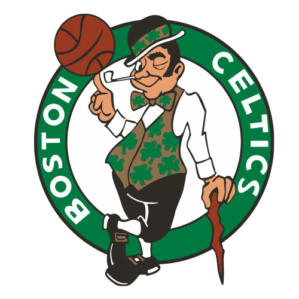

Football/Soccer
- Fenerbahce
Favorite club:

Fenerbahçe Spor Kulübü are a Turkish professional football club based in Istanbul, Turkey. They are the men's football department of Fenerbahçe SK, a major professional multi-sport club.
Basketball
- Boston Celtics 
Favorite club:
The Boston Celtics are an American professional basketball team based in Boston. The Celtics compete in the National Basketball Association as a member of the league's Eastern Conference Atlantic Division.
Boxing
- Canelo
- Gennady Golovkin aka GGG
- Tyson Fury
Favorite boxers:

Canelo has won multiple world championships in four weight classes from light middleweight to light heavyweight, including unified titles in three of those weight classes and lineal titles in two.
GGG is a Kazakhstani professional boxer. He has held multiple middleweight world championships, and is a two-time unified champion, having held the IBF title since 2019 and the WBA title since April 2022.
Tyson Fury is a two-time world heavyweight champion, having held the WBC title since defeating Deontay Wilder in 2020, and The Ring magazine title from 2020 to August 2022